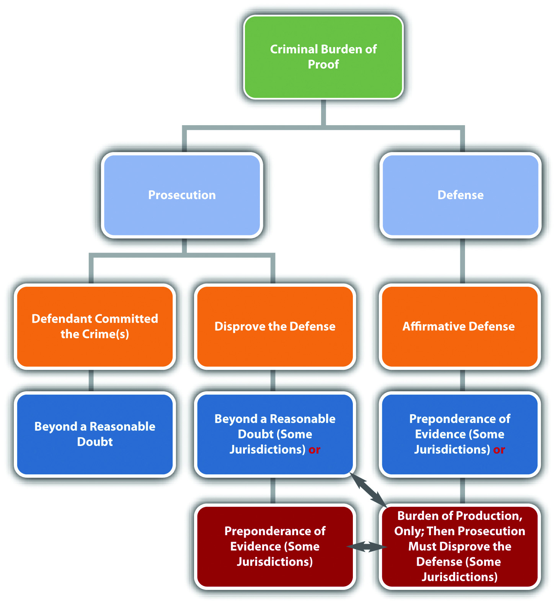

Source: Image courtesy of Tara Storm.
The requirement of proof beyond a reasonable doubt has this vital role in our criminal procedure for cogent reasons. The accused, during a criminal prosecution, has at stake interests of immense importance, both because of the possibility that he may lose his liberty upon conviction and because of the certainty that he would be stigmatized by the conviction.
In re: Winship, cited in Section 2 "Burden of Proof in a Criminal Prosecution"
The United States’ system of government is called federalismA system of government in which power is divided between a national, federal government and several state governments.. Federalism, as set forth in the US Constitution, divides governmental power between the federal government and each of the states. This prevents a concentrated source of governmental power in one individual or small group of individuals. Because of federalism, the United States has one federal legal system, and each state has its own state legal system. Thus in the United States, a plethora of legal systems all operate harmoniously at the same time.
The government’s power to regulate comes from the US Constitution. The federal government derives its authority to create law from Article I, § 8, which discusses federal Congress’s exclusive or delegated powers. These include the power to regulate currency and coin, establish a post office, promote science and art by regulating the rights to discoveries and writings, declare war and raise armies, conduct foreign affairs, regulate interstate and foreign commerce, and make laws necessary and proper to execute other powers expressly granted in the Constitution. Courts have interpreted the last two powers mentioned in the commerce clauseA clause in the Constitution that allows Congress to regulate commerce (economic activity) that crosses state lines. and the necessary and proper clauseA clause in the Constitution that allows Congress to make laws necessary to carry out all powers listed in the Constitution. to be the broadest sources of federal regulatory authority.
To simplify and summarize precedent defining federal regulatory authority, federal laws are meant to regulate in two areas. First, federal laws regulate issues that concern the country, rather than just one city, county, or state. The federal government regulates in the area of foreign affairs, for example, because this affects the United States of America, not just one particular region. Second, federal laws regulate commerce, which is economic activity, that crosses from state to state. Some common examples are television broadcasts, the Internet, and any form of transportation such as the airlines.
The original intent was for the federal government to be a limited government, with the bulk of regulatory authority residing in the states. The only crimes Congress is specifically authorized to punish are piracies and felonies on the high seas, counterfeiting, and treason; however, case precedent has expanded the federal government’s power to enact criminal laws based on the commerce clause and the necessary and proper clause.McCulloch v. Maryland, 17 U.S. (4 Wheat.) 316 (1819), accessed August 28, 2010, http://www.law.cornell.edu/supct/html/historics/USSC_CR_0017_0316_ZS.html. Still, there must be some connection to an issue of national character and interstate commerce, or the federal government will overstep its authority. In general, federal criminal laws target conduct that occurs on federal property or conduct involving federal employees, currency, coin, treason, national security, rights secured by the Constitution, or commerce that crosses state lines. Currently, over five hundred crimes are listed in Part I, Title 18 of the United States Code, which codifies criminal laws for the federal government.
Figure 2.1 Diagram of Federal Laws

The US Constitution designates the states as the primary regulatory authority. This is clarified in the Tenth Amendment, which reads, “The powers not delegated to the United States by the Constitution, nor prohibited to it by the States, are reserved to the States respectively, or the people.” State laws are also supposed to regulate in two areas. First, state laws regulate issues of a local character or concern. A state may regulate, for example, its water ownership and use because water can be scarce and is not generally provided to other states. Second, state laws regulate issues or things that remain within a state’s border. A state generally regulates, for example, the operation of a small business whose products are only sold locally and not shipped out of the state.
Federal laws are the same in every state, but state laws differ from state to state. Something that is legal in one state may be illegal in another state. This inconsistency makes our system of federalism complicated for students (and lawyers). However, with a country as large and varied as the United States, it is sensible to allow each state to choose for itself which laws will be most suitable.
The power to enact criminal laws belongs almost exclusively to the states. This is because of the Tenth Amendment, which vests in states a police powerThe states’ power to regulate for citizens’ health, safety, and welfare, as set forth in the Tenth Amendment to the Constitution. to provide for the health, safety, and welfare of state citizens. Approximately 90 percent of all criminal laws are state, rather than federal. Often, federal crimes are also state crimes and can be prosecuted and punished by both the state and federal government without violating the principle of double jeopardy.
In Nevada, prostitution is legal under certain circumstances.N.R.S. § 201.354, accessed September 24, 2010, http://www.leg.state.nv.us/nrs/NRS-201.html#NRS201Sec354. An individual who engages in prostitution inside a licensed “house of prostitution” in Nevada is not exposed to criminal liability. However, if the same individual engages in prostitution in a different state, he or she may be subject to a criminal prosecution. Prostitution will be discussed in detail in Chapter 12 "Crimes against the Public".
Figure 2.2 Crack the Code
Our legal system is divided up to conform to the principle of federalism, so a potential exists for conflict between federal law and state law. A federal law may make something illegal; a state law may insist that it is legal. Whenever a conflict occurs between federal and state law, courts must follow the federal law. This is called federal supremacyIf there is a conflict between federal and state law, courts must follow the federal law.. As the Supremacy Clause of Article VI of the federal Constitution states, “This Constitution, and the Laws of the United States which shall be made in Pursuance thereof; and all Treaties made, or which shall be made, under the Authority of the United States, shall be the supreme Law of the Land; and the Judges in every State shall be bound thereby, any Thing in the Constitution or Laws of any State to the Contrary notwithstanding.”
In Washington and several other states, an individual may possess and use marijuana for medicinal purposes with a prescription.Washington State Medicinal Marijuana Act, Chapter 69.51A RCW, accessed August 28, 2010, http://apps.leg.wa.gov/RCW/default.aspx?cite=69.51a&full=true; see all states that legalize medicinal marijuana: “16 Legal Medical Marijuana States and DC,” ProCon.org website, accessed August 28, 2010, http://medicalmarijuana.procon.org/view.resource.php?resourceID=000881. Federal law prohibits possession and use of marijuana under any circumstances.21 U.S.C. Ch. 13 § 801 et. seq., accessed October 1, 2010, http://www.deadiversion.usdoj.gov/21cfr/21usc/index.html. Technically, this could be a conflict that violates federal supremacy. Until the courts address the federal supremacy issue, however, medical marijuana statutes can continue to stay in effect. Read about a recent ruling regarding the constitutionality of Michigan’s medicinal marijuana law under the Supremacy Clause: http://www.pressandguide.com/articles/2011/04/09/news/doc4d9f557b8ab37805648033.txt.
Figure 2.3 Diagram of State Laws
Can a State Regulate Immigration?
Arizona passed a comprehensive immigration law designed to seek out and deport illegal immigrants. This law created a national furor, and its detractors insisted it would lead to unethical racial profiling. The federal government attacked the law in Federal District Court.Randal C. Archibold, “Judge Blocks Arizona’s Immigration Law,” The New York Times website, accessed October 1, 2010, http://www.nytimes.com/2010/07/29/us/29arizona.html. Judge Susan Bolton issued a preliminary injunction that stopped enforcement of the sections of the law that required state law enforcement to check an immigrant’s status while enforcing other laws and that required immigrants to prove they were in the country legally or risk state charges.Randal C. Archibold, “Judge Blocks Arizona’s Immigration Law,” The New York Times website, accessed October 1, 2010, http://www.nytimes.com/2010/07/29/us/29arizona.html. Read the District Court’s preliminary injunction ruling, which is available at this link: http://graphics8.nytimes.com/packages/pdf/national/20100729_ARIZONA_DOC.pdf.
Read about the most recent ruling on Arizona’s immigration law by the US Court of Appeals for the Ninth Circuit: http://latindispatch.com/2011/05/10/arizonas-jan-brewer-to-appeal-immigration-law-to-u-s-supreme-court/.
Read about Utah’s immigration law: http://articles.cnn.com/2011-05-11/politics/utah.immigration.bill_1_utah-law-gary-herbert-utah-gov?_s=PM:POLITICS.
Read about Alabama’s immigration law: http://www.reuters.com/article/2011/06/10/tagblogsfindlawcom2011-freeenterprise-idUS123058502120110610.
10-16645 U.S. v. State of Arizona
This video is the Arizona governor’s appeal of the district court preliminary injunction:
Congress gets its regulatory authority from Article I § 8 of the federal Constitution. This includes several delegated powers, the commerce clause, and the necessary and proper clause.
Answer the following questions. Check your answers using the answer key at the end of the chapter.
The federal Constitution was written to ensure that government power is distributed and never concentrated in one or more areas. This philosophy is served by federalism, where the federal government shares power with the states. It is also further served by dividing the government into three branches, all responsible for different government duties and all checking and balancing each other. The three branches of government are detailed in Articles I–III of the federal Constitution and are the legislative branchThe branch of government responsible for creating statutory law., the executive branchThe branch of government responsible for enforcing statutory law., and the judicial branchThe branch of government responsible for interpreting statutory and constitutional law(s).. While the federal Constitution identifies only the federal branches of government, the principle of checks and balances applies to the states as well. Most states identify the three state branches of government in their state constitution.
Each branch of government has a distinct authority. When one branch encroaches on the duties of another, this is called a violation of separation of powersEach government branch must act only within the scope set forth in the Constitution.. The courts decide whether a government branch has overstepped its boundaries because courts interpret the Constitution, which describes each branch’s sphere of influence. Thus the judicial branch, which consists of all the courts, retains the balance of power.
The legislative branch is responsible for creating statutory laws. Citizens of a state can vote for some state statutes by ballot, but the federal legislative branch enacts all federal statutes. In the federal government, the legislative branch is headed by Congress. States’ legislative branches are headed by a state legislature. Congress is bicameralMade up of two houses., which means it is made up of two houses. This system provides equal representation among the several states and by citizens of the United States. States are represented by the SenateThe house of Congress responsible for representing each state.. Every state, no matter how large or small, gets two senators. Citizens are represented by the House of RepresentativesThe house of Congress responsible for representing each citizen of the United States.. Membership in the House of Representatives is based on population. A heavily populated state, like California, has more representatives than a sparsely populated state, like Alaska. States’ legislatures are generally bicameral and have a similar structure to the federal system.
Figure 2.4 Diagram of the Legislative Branch
The legislative branch can check and balance both the executive branch and the judicial branch. Congress can impeach the president of the United States, which is the first step toward removal from office. Congress can also enact statutes that supersede judicial opinions, as discussed in Chapter 1 "Introduction to Criminal Law". Similarly, state legislature can also impeach a governor or enact a state statute that supersedes a state case law.
The executive branch is responsible for enforcing the statutes enacted by the legislative branch. In the federal government, the executive branch is headed by the president of the United States. States’ executive branches are headed by the governor of the state.
Figure 2.5 Diagram of the Executive Branch
The executive branch can check and balance both the legislative branch and the judicial branch. The president of the United States can veto statutes proposed by Congress. The president also has the authority to nominate federal justices and judges, who thereafter serve for life. State executive branches have similar check and balancing authority; a governor can generally veto statutes proposed by state legislature and can appoint some state justices and judges.
The judicial branch is responsible for interpreting all laws, including statutes, codes, ordinances, and the federal and state constitutions. This power is all encompassing and is the basis for judicial review, referenced in Chapter 1 "Introduction to Criminal Law". It allows the judicial branch to invalidate any unconstitutional law in the statutory source of law and also to change the federal and state constitutions by interpretation. For example, when a court creates an exception to an amendment to the constitution, it has made an informal change without the necessity of a national or state consensus. The federal judicial branch is headed by the US Supreme Court. Each state’s judicial branch is headed by the highest-level state appellate court. Members of the judicial branch include all judges and justices of every federal and state court in the court system, which is discussed shortly.
Figure 2.6 Diagram of the Judicial Branch
The judicial branch can check and balance both the legislative branch and the executive branch. The US Supreme Court can invalidate statutes enacted by Congress if they conflict with the Constitution. The US Supreme Court can also prevent the president from taking action if that action violates separation of powers. The state courts can likewise nullify unconstitutional statutes passed by the state legislature and void other executive branch actions that are unconstitutional.
Table 2.1 The Most Prominent Checks and Balances between the Branches
| Government Branch | Duty or Authority | Check and Balance | Government Branch Checking and Balancing |
|---|---|---|---|
| Legislative | Create statutes | President can veto | Executive |
| Executive | Enforce statutes | Congress can override presidential veto by 2/3 majority | Legislative |
| Judicial | Interpret statutes and Constitution | President nominates federal judges and justices | Executive |
| Executive | Enforce statutes | Senate can confirm or reject presidential nomination of federal judges and justices | Legislative |
| Executive | Enforce statutes | Congress can impeach the president | Legislative |
| Legislative | Create statutes | Courts can invalidate unconstitutional statutes | Judicial |
| Executive | Enforce statutes | Courts can invalidate unconstitutional executive action | Judicial |
| Judicial | Interpret statutes and Constitution | Statutes can supersede case law | Legislative |
Answer the following questions. Check your answers using the answer key at the end of the chapter.
Every state has two court systems: the federal court system, which is the same in all fifty states, and the state court system, which varies slightly in each state. Federal courts are fewer in number than state courts. Because of the Tenth Amendment, discussed earlier in Section 2.1.2 "The Scope of State Law", most laws are state laws and therefore most legal disputes go through the state court system.
Federal courts are exclusive; they adjudicate only federal matters. This means that a case can go through the federal court system only if it is based on a federal statute or the federal Constitution. One exception is called diversity of citizenship.28 U.S.C. § 1332, accessed August 30, 2010, http://www.law.cornell.edu/uscode/28/1332.html. If citizens from different states are involved in a civil lawsuit and the amount in controversy exceeds $75,000, the lawsuit can take place in federal court. All federal criminal prosecutions take place in federal courts.
State courts are nonexclusive; they can adjudicate state or federal matters. Thus an individual who wants to sue civilly for a federal matter has the option of proceeding in state or federal court. In addition, someone involved in a lawsuit based on a federal statute or the federal Constitution can remove a lawsuit filed in state court to federal court.28 U.S.C. § 1441 et. seq., accessed August 30, 2010, http://www.law.cornell.edu/uscode/28/1441.html. All state criminal prosecutions take place in state courts.
Determining which court is appropriate for a particular lawsuit depends on the concept of jurisdictionEither a court’s power to hear a case or a court’s authority over a geographic area.. Jurisdiction has two meanings. A court’s jurisdiction is the power or authority to hear the case in front of it. If a court does not have jurisdiction, it cannot hear the case. Jurisdiction can also be a geographic area over which the court’s authority extends.
There are two prominent types of court jurisdiction. Original jurisdictionA court’s power to hear a trial and accept evidence. means that the court has the power to hear a trial. Usually, only one opportunity exists for a trial, although some actions result in both a criminal and a civil trial, discussed previously in Chapter 1 "Introduction to Criminal Law". During the trial, evidence is presented to a trier of factThe decision maker at trial; could be a judge or jury., which can be either a judge or a jury. The trier of fact determines the facts of a dispute and decides which party prevails at trial by applying the law to those facts. Once the trial has concluded, the next step is an appeal. During an appeal, no evidence is presented; the appellate court simply reviews what took place at trial and determines whether or not any major errors occurred.
The power to hear an appeal is called appellate jurisdictionA court’s power to hear an appeal and review a trial for error.. Courts that have appellate jurisdiction review the trial record for error. The trial record includes a court reporter’s transcript, which is typed notes of the words spoken during the trial and pretrial hearings. In general, with exceptions, appellate courts cannot review a trial record until the trial has ended with a final judgment. Once the appellate court has made its review, it has the ability to take three actions. If it finds no compelling or prejudicial errors, it can affirmAn appellate court’s power to uphold a lower court decision. the judgment of the trial court, which means that the judgment remains the same. If it finds a significant error, it can reverseAn appellate court’s power to change a lower court decision. the judgment of the trial court, which means that the judgment becomes the opposite (the winner loses, the loser wins). It can also remandAn appellate court’s power to send a case back to the trial court, with instructions., which means send the case back to the trial court, with instructions. After remand, the trial court can take action that the appellate court cannot, such as adjust a sentence or order a new trial.
Some courts have only original jurisdiction, but most courts have a little of original and appellate jurisdiction. The US Supreme Court, for example, is primarily an appellate court with appellate jurisdiction. However, it also has original jurisdiction in some cases, as stated in the Constitution, Article III, § 2, clause 2: “In all Cases affecting Ambassadors, other public Ministers and Consuls, and those in which a State shall be Party, the supreme Court shall have original Jurisdiction. In all the other Cases before mentioned, the supreme Court shall have appellate jurisdiction.”
Paulina is prosecuted for the attempted murder of Ariana. Paulina is represented by public defender Pedro. At Paulina’s trial, in spite of Pedro’s objections, the judge rules that Paulina’s polygraph examination results are admissible, but prohibits the admission of certain witness testimony. Paulina is found guilty and appeals, based on the judge’s evidentiary rulings. While Pedro is writing the appellate brief, he discovers case precedent barring the admission of polygraph examination results. Pedro can include the case precedent in his appellate brief but not the prohibited witness testimony. The appellate court has the jurisdiction to hold that the objection was improperly overruled by the trial court, but is limited to reviewing the trial record for error. The appellate court lacks the jurisdiction to admit new evidence not included in the trial record.
For the purpose of this book, the focus is the federal trial court and the intermediate and highest level appellate courts because these courts are most frequently encountered in a criminal prosecution. Other federal specialty courts do exist but are not discussed, such as bankruptcy court, tax court, and the court of military appeals.
The federal trial court is called the United States District Court. Large states like California have more than one district court, while smaller states may have only one. District courts hear all the federal trials, including civil and criminal trials. As stated previously, a dispute that involves only state law, or a state criminal trial, cannot proceed in district court. The exception to this rule is the diversity of citizenship exception for civil lawsuits.
After a trial in district court, the loser gets one appeal of rightA party is guaranteed an appeal if grounds are present.. This means that the intermediate appellate federal court must hear an appeal of the district court trial if there are sufficient grounds. The intermediate appellate court in the federal system is the United States Court of Appeals. There is less federal law than state law, so only thirteen US Courts of Appeals exist for all fifty states. The US Courts of Appeals are spread out over thirteen judicial circuits and are also referred to as Circuit Courts.
Circuit Courts have appellate jurisdiction and can review the district court criminal and civil trials for error. The Circuit Court reviews only trials that are federal in nature, with the exception of civil lawsuits brought to the district court under diversity of citizenship. As noted in Chapter 1 "Introduction to Criminal Law", the federal Constitution governs criminal trials, so only a guilty defendant can appeal. In general, with exceptions, appeal of a not-guilty verdict (also called an acquittalA not-guilty verdict.) violates a defendant’s double jeopardy protection.
After a Circuit Court appeal, the loser has one more opportunity to appeal to the highest-level federal appellate court, which is the United States Supreme Court. The US Supreme Court is the highest court in the country and is located in Washington, DC, the nation’s capital. The US Supreme Court has eight associate justices and one chief justice: all serve a lifetime appointment.
The US Supreme Court is a discretionary courtA court that can accept or reject appeals., meaning it does not have to hear appeals. Unlike the Circuit Courts, the US Supreme Court can pick and choose which appeals it wants to review. The method of applying for review with the US Supreme Court is called filing a petition for a writ of certiorariA petition that must be granted to reach the United States Supreme Court..
Any case from a Circuit Court, or a case with a federal matter at issue from a state’s highest-level appellate court, can petition for a writ of certiorari. If the writ is granted, the US Supreme Court reviews the appeal. If the writ is denied, which it is the majority of the time, the ruling of the Circuit Court or state high court is the final ruling. For this reason, the US Supreme Court reverses many cases that are accepted for review. If the US Supreme Court wants to “affirm” the intermediate appellate court ruling, all it has to do is deny the petition and let the lower court ruling stand.
For the purpose of this book, a representative state court system is reviewed. Slight variations in this system may occur from state to state.
Most states offer their citizens a “people’s court,” typically called small claims court. Small claims court is a civil court designed to provide state citizens with a low-cost option to resolve disputes where the amount in controversy is minimal. A traditional small claims court only has the jurisdiction to award money damages. This means that it cannot adjudicate criminal matters or family court matters such as granting a petition for divorce. Small claims courts also limit the amount of money damages available, typically less than $10,000.
Small claims court has special rules that make it amenable to the average individual. Attorneys cannot represent clients in small claims court, although they certainly can represent themselves just like any other individual. Small claims court proceedings are generally informal, and usually no court reporter types what is said. Therefore, no court record exits for appeal. Small claims court appeals are the exception to the general rule and are usually new trials where evidence is accepted.
States generally have a state trial court that can also be the appellate court for small claims court appeals. This trial court is usually called superior court, circuit court, or county court. State trial courts are generally all-purpose and hear civil litigation matters, state criminal trials, and nonlitigation cases including family law, wills and probate, foreclosures, and juvenile adjudications. States can, however, create “specialty courts” to hear special matters and free up the trial courts for basic criminal prosecutions and civil litigation trials. Some states divide their trial courts into lower and higher levels. The lower-level trial court adjudicates infractions and misdemeanors, along with civil lawsuits with a smaller amount in controversy. The higher-level trial court adjudicates felonies and civil lawsuits with a higher amount in controversy.
The intermediate appellate court for the state court system is usually called the state court of appeals, although some smaller or low-population states may have only one appellate court called the state supreme court. The state courts of appeal provide appeals of right, meaning they must hear an appeal coming from the state’s trial court if adequate grounds are present. Appeals can be of any case adjudicated in the state trial court. In state criminal prosecutions, as stated earlier in the discussion of federal appeals, only a guilty defendant can appeal without violating the protection against double jeopardy. At the appellate level, the state court of appeal simply reviews the trial court record for error and does not have the jurisdiction to hear new trials or accept evidence.
The highest appellate court for the state court system is usually called the state supreme court. In states that have both intermediate and high-level appellate courts, the state supreme court is a discretionary court that gets to select the appeals it hears, very similar to the US Supreme Court. The state supreme court generally grants a petition for writ of certiorari, or a petition for review, if it decides to hear a civil or criminal case coming out of the state court of appeal. If review is denied, the state court of appeal ruling is the final ruling on the case. If review is granted and the state supreme court rules on the case, the loser has one more chance to appeal, if there is a federal matter, to the US Supreme Court.
Figure 2.7 Diagram of the Court System

Answer the following questions. Check your answers using the answer key at the end of the chapter.
The key to the success of a civil or criminal trial is meeting the burden of proofAn obligation to prove a disputed charge, allegation, or defense.. A failure to meet the burden of proof is also a common ground for appeal. In this section, you learn the burden of proof for the plaintiff, prosecution, and defendant. You also are introduced to different classifications of evidence and evidentiary rules that can change the outcome of the trial.
The burden of proof is a party’s responsibility to prove a disputed charge, allegation, or defense.Yourdictionary.com, “Definition of Burden of Proof,” accessed September 26, 2010, http://www.yourdictionary.com/burden-of-proof. The burden of proof has two components: the burden of productionThe duty to present evidence to the trier of fact. and the burden of persuasionThe duty to convince the trier of fact to a certain standard.. The burden of production is the obligation to present evidence to the judge or jury. The burden of persuasion is the duty to convince the judge or jury to a certain standard, such as beyond a reasonable doubtThe burden of proof in a criminal case, which must be enough compelling evidence to overcome the defendant’s presumption of innocence., which is defined shortly. This standard is simply a measuring point and is determined by examining the quantity and quality of the evidence presented. “Meeting the burden of proof” means that a party has introduced enough compelling evidence to reach the standard defined in the burden of persuasion.
The plaintiff or prosecutor generally has the burden of proving the case, including every element of it. The defendant often has the burden of proving any defense. The trier of fact determines whether a party met the burden of proof at trial. The trier of fact would be a judge in a nonjury or bench trialA trial where the trier of fact is a judge, rather than a jury.. In a criminal case, the trier of fact is almost always a jury because of the right to a jury trial in the Sixth Amendment. Jurors are not legal experts, so the judge explains the burden of proof in jury instructions, which are a common source of appeal.
Burdens of proof vary, depending on the type of case being tried. The plaintiff’s burden of proof in a civil case is called preponderance of evidenceThe burden of proof for the plaintiff and defendant in a civil trial, and for some defenses in a criminal prosecution, which is enough evidence to prove that it is more likely than not that the party should prevail.. Preponderance of evidence requires the plaintiff to introduce slightly more or slightly better evidence than the defense. This can be as low as 51 percent plaintiff to 49 percent defendant. When preponderance of evidence is the burden of proof, the judge or jury must be convinced that it is “more likely than not” that the defendant is liable for the plaintiff’s injuries. Preponderance of evidence is a fairly low standard, but the plaintiff must still produce more and better evidence than the defense. If the plaintiff offers evidence of questionable quality, the judge or jury can find that the burden of proof is not met and the plaintiff loses the case.
The defendant’s burden of proof when proving a defense in a civil case is also preponderance of evidence. For example, in the O. J. Simpson civil case discussed in Chapter 1 "Introduction to Criminal Law", O. J. Simpson failed to meet the burden of proving the defense of alibi. The defendant does not always have to prove a defense in a civil case. If the plaintiff does not meet the burden of proof, the defendant is victorious without having to present any evidence at all.
The prosecution’s burden of proof in a criminal case is the most challenging burden of proof in law; it is beyond a reasonable doubt. Judges have struggled with a definition for this burden of proof. As Chief Justice Shaw stated nearly a century ago,
[w]hat is reasonable doubt? It is a term often used, probably pretty well understood, but not easily defined. It is not mere possible doubt; because every thing relating to human affairs, and depending on moral evidence, is open to some possible or imaginary doubt. It is that state of the case, which, after the entire comparison and consideration of all the evidence, leaves the minds of jurors in that condition that they cannot say they feel an abiding conviction, to a moral certainty, of the truth of the charge.Commonwealth v. Webster, 59 Mass. 295, 320 (1850), accessed September 26, 2010, http://masscases.com/cases/sjc/59/59mass295.html.
In general, the prosecution’s evidence must overcome the defendant’s presumption of innocenceThe trier of fact must begin a criminal trial concluding that the defendant is innocent., which the Constitution guarantees as due process of law.In re Winship, 397 U.S. 358 (1970), accessed September 26, 2010, http://www.law.cornell.edu/supct/html/historics/USSC_CR_0397_0358_ZO.html. This fulfills the policy of criminal prosecutions, which is to punish the guilty, not the innocent. If even a slight chance exists that the defendant is innocent, the case most likely lacks convincing and credible evidence, and the trier of fact should acquit the defendant.
States vary as to their requirements for the defendant’s burden of proof when asserting a defense in a criminal prosecution.Findlaw.com, “The Insanity Defense among the States,” findlaw.com website, accessed October 1, 2010, http://criminal.findlaw.com/crimes/more-criminal-topics/insanity-defense/the-insanity-defense-among-the-states.html. Different defenses also have different burdens of proof, as is discussed in detail in Chapter 5 "Criminal Defenses, Part 1" and Chapter 6 "Criminal Defenses, Part 2". Some states require the defendant to meet the burden of production, but require the prosecution to thereafter meet the burden of persuasion, disproving the defense to a preponderance of evidence or, in some states, beyond a reasonable doubt. Other states require the defendant to meet the burden of production and the burden of persuasion. In these states, the defendant’s standard is typically preponderance of evidence, not beyond a reasonable doubt. The defendant does not always have to prove a defense in a criminal prosecution. If the prosecution does not meet the burden of proof, the defendant is acquitted without having to present any evidence at all.
Ann is on trial for first-degree murder. The only key piece of evidence in Ann’s trial is the murder weapon, which was discovered in Ann’s dresser drawer during a law enforcement search. Before Ann’s trial, the defense makes a motion to suppress the murder weapon evidence because the search warrant in Ann’s case was signed by a judge who was inebriated and mentally incompetent. The defense is successful with this motion, and the judge rules that the murder weapon is inadmissible at trial. The prosecution decides to proceed anyway. If there is no other convincing and credible evidence of Ann’s guilt, Ann does not need to put on a defense in this case. The prosecution will fail to meet the burden of proof and Ann will be acquitted.
Figure 2.8 Diagram of the Criminal Burden of Proof
Parties can use two tools to help meet the burden of proof: inferenceA conclusion the trier of fact may make. and presumptionA conclusion the trier of fact must make.. Jury instructions can include inferences and presumptions and are often instrumental in the successful outcome of a case.
An inference is a conclusion that the judge or jury may make under the circumstances. An inference is never mandatory but is a choice. For example, if the prosecution proves that the defendant punched the victim in the face after screaming, “I hate you!” the judge or jury can infer that the punch was thrown intentionally.
A presumption is a conclusion that the judge or jury must make under the circumstances. As stated previously, all criminal defendants are presumed innocent. Thus the judge or jury must begin any criminal trial concluding that the defendant is not guilty.
Presumptions can be rebuttableCan be overcome with evidence. or irrebuttableCannot be overcome with evidence.. A party can disprove a rebuttable presumption. The prosecution can rebut the presumption of innocence with evidence proving beyond a reasonable doubt that the defendant is guilty. An irrebuttable presumption is irrefutable and cannot be disproved. In some jurisdictions, it is an irrebuttable presumption that children under the age of seven are incapable of forming criminal intent. Thus in these jurisdictions children under the age of seven cannot be criminally prosecuted (although they may be subject to a juvenile adjudication proceeding).
Two primary classifications are used for evidence: circumstantial evidenceA type of evidence that indirectly proves a fact. or direct evidenceA type of evidence that directly proves a fact..
Circumstantial evidence indirectly proves a fact. Fingerprint evidence is usually circumstantial. A defendant’s fingerprint at the scene of the crime directly proves that the defendant placed a finger at that location. It indirectly proves that because the defendant was present at the scene and placed a finger there, the defendant committed the crime. Common examples of circumstantial evidence are fingerprint evidence, DNA evidence, and blood evidence. Criminal cases relying on circumstantial evidence are more difficult for the prosecution because circumstantial evidence leaves room for doubt in a judge’s or juror’s mind. However, circumstantial evidence such as DNA evidence can be very reliable and compelling, so the prosecution can and often does meet the burden of proof using only circumstantial evidence.
Direct evidence directly proves a fact. For example, eyewitness testimony is often direct evidence. An eyewitness testifying that he or she saw the defendant commit the crime directly proves that the defendant committed the crime. Common examples of direct evidence are eyewitness testimony, a defendant’s confession, or a video or photograph of the defendant committing the crime. Criminal cases relying on direct evidence are easier to prove because there is less potential for reasonable doubt. However, direct evidence can be unreliable and is not necessarily preferable to circumstantial evidence. If an eyewitness is impeachedWhen a witness is made to appear untruthful., which means he or she loses credibility, the witness’s testimony lacks the evidentiary value of reliable circumstantial evidence such as DNA evidence.
Table 2.2 Comparison of Circumstantial and Direct Evidence in a Burglary Case
| Evidence | Circumstantial | Direct |
|---|---|---|
| Fiber from the defendant’s coat found in a residence that has been burglarized | Yes | No—directly proves presence at the scene, not that the defendant committed burglary |
| GPS evidence indicating the defendant drove to the burglarized residence | Yes | No—same explanation as fiber evidence |
| Testimony from an eyewitness that she saw the defendant go into the backyard of the burglarized residence | Yes | No—could prove trespassing because it directly proves presence at the scene, but it does not directly prove burglary |
| Surveillance camera footage of the defendant purchasing burglar tools | Yes | No—does not directly prove they were used on the residence |
| Cell phone photograph of the defendant burglarizing the residence | No | Yes—directly proves that the defendant committed the crime |
| Witness testimony that the defendant confessed to burglarizing the residence | No | Yes—directly proves that the defendant committed the crime |
| Pawn shop receipt found in the defendant’s pocket for items stolen from the residence | Yes | No—directly proves that the items were pawned, not stolen |
Casey Anthony Verdict: Found Not Guilty of Murder
In this video, the jury foreperson in the Casey Anthony trial reads the trial verdict. Casey Anthony was acquitted of murder, manslaughter, and child abuse of her daughter, Caylee Anthony. The evidence in the case was all circumstantial, and the coroner did not determine the cause of the victim’s death.David Lohr, “Casey Anthony Verdict: NOT GUILTY of First-Degree Murder,” Huffingtonpost.com website, accessed August 24, 2011, http://www.huffingtonpost.com/2011/07/05/casey-anthony-trial-verdict_n_890173.html#s303265&title=Casey_Anthony_Verdict.
The civil burden of proof is preponderance of evidence, for both the plaintiff and the defendant. The criminal burden of proof for the prosecution is beyond a reasonable doubt.
Answer the following questions. Check your answers using the answer key at the end of the chapter.
The United States’ system of government is called federalism and consists of one federal government regulating issues of a national concern and separate state governments regulating local issues. The bulk of criminal lawmaking resides with the states because of the police power granted to the states in the Tenth Amendment. Ninety percent of all criminal laws are state laws. Many federal crimes are also state crimes, and a defendant can be prosecuted federally and by a state without triggering double jeopardy protection. If a federal statute exists on an issue, a state statute cannot conflict with it because of the Constitution’s Supremacy Clause.
The Constitution sets forth three branches of government. The legislative branch consists of Congress and has the authority to create laws. The executive branch is headed by the president of the United States and has the authority to enforce the laws created by the legislative branch. The judicial branch is headed by the US Supreme Court and has the authority to interpret laws and the Constitution. Each branch checks and balances each other, and the judicial branch ensures that no branch oversteps its authority and violates separation of powers. State governments mimic the federal branches of government at the state level and set forth authorities in each state’s constitution.
The federal court system exclusively adjudicates federal matters and consists primarily of the US District Court, the US Court of Appeals or Circuit Court, and the US Supreme Court. Each state has its own court system consisting primarily of a trial court, intermediate court of appeal, and possibly a high court of appeal. Trial courts have original jurisdiction and can accept evidence. Appellate courts have appellate jurisdiction and are limited to reviewing the trial courts’ decisions for error.
Each party in a civil or criminal trial must meet a burden of proof, which consists of a burden of producing evidence and a burden of persuading the trier of fact. The burden of proof for a civil plaintiff or defendant is preponderance of evidence, which means that the trier of fact must be convinced it is more likely than not that a party should prevail. The burden of proof for the prosecution in a criminal case is beyond a reasonable doubt, which is a stricter standard than preponderance of evidence and consists of enough compelling evidence to rebut the defendant’s presumption of innocence. The burden of proof for a criminal defense varies but is often preponderance of evidence. Inferences, which are conclusions the trier of fact may make, and presumptions, which are conclusions the trier of fact must make, can help meet the burden of proof. The evidence presented to meet the burden of proof can be circumstantial, which indirectly proves a fact, or direct, which directly proves a fact. Circumstantial evidence leaves room for reasonable doubt, but it can be reliable and the basis of a successful criminal prosecution.
Read the prompt, review the case, and then decide whether enough evidence exists to meet the burden of proof. Check your answers using the answer key at the end of the chapter.
From Section 2.2 "The Branches of Government"
From Section 2.3 "The Court System"
From Section 2.4 "The Burden of Proof"